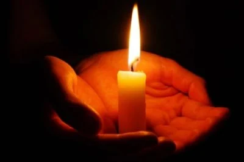

Урок мужності
Мужність — це не лише здатність долати страх, а й готовність брати на себе відповідальність, відстоювати правду та допомагати іншим. Вона проявляється у вчинках, великих і малих, у щоденній праці й у героїчних подвигах.
Гра: Знайди символ мужності
Цей символ означає мужність і незламність духу в боротьбі за незалежність рідного краю, благородний порив виборювати свободу й гідність людську. Знайди символ мужності України!
Оберіть картку, яка символізує мужність
Приклади мужності
- Захисники та захисниці України, які боронять нашу свободу.
- Лікарі та волонтери, що рятують життя у складних умовах.
- Науковці, митці й освітяни, які працюють попри труднощі.
- Кожен із нас, коли долаємо власні страхи й перешкоди.
Мужність у нашому житті
Мужність — це не тільки великі битви. Це й щоденні маленькі кроки: сказати правду, визнати помилку, підтримати товариша. У web-програмуванні мужність означає:
- Не боятися експериментувати з новими технологіями.
- Продовжувати роботу, навіть коли код не працює.
- Презентувати власні ідеї публічно.
- Вчитися на помилках і рухатися вперед.
Мужність у творчості українських митців
Українські поети та письменники завжди оспівували мужність. Вони бачили її як світло, що веде народ крізь темряву випробувань:
"Борітеся — поборете,
Вам Бог помагає!
За вас правда, за вас слава
І воля святая!"
— Тарас Шевченко
"Сміливі завжди мають щастя."
— Леся Українка
"Життя дається лише раз, і прожити його треба так, щоб не було боляче за марно прожиті роки."
— Олександр Довженко
Вікторина "Чи знаєш ти, що таке мужність?"
- Що означає слово "мужність"?
- Уміння бути фізично сильним
- Здатність долати страх і труднощі
- Вміння керувати іншими людьми
- Який приклад можна назвати мужнім вчинком?
- Списати завдання у товариша
- Визнати свою помилку і виправити її
- Не слухати поради інших
- Хто з перелічених проявляє мужність?
- Волонтер, який допомагає нужденним
- Той, хто ухиляється від відповідальності
- Той, хто хвалиться чужими досягненнями
- Що спільного між мужністю та web-програмуванням?
- Нічого спільного
- Необхідність долати труднощі та не здаватися
- Тільки робота з комп’ютером
- Яке прислів’я найкраще описує мужність?
- Без труда нема плода
- Сміливого куля боїться
- Хто рано встає, тому Бог дає
Вшанування героїв
Ми завжди пам’ятатимемо мужніх воїнів, які віддали своє життя за незалежність і свободу України. Їхня жертва — це приклад справжньої відваги та любові до Батьківщини. Оголошую хвилину мовчання. Вічна пам’ять героям!
Чому важливо бути мужнім?
Мужність допомагає долати труднощі, захищати себе й інших, бути чесним і відкритим. Це якість, яка потрібна і у великих життєвих ситуаціях, і в щоденних справах. Кожен із нас може проявляти мужність — у навчанні, у спілкуванні, у творчості. А ще — пам’ятати, що наш народ сильний тоді, коли ми єдині й сміливі.